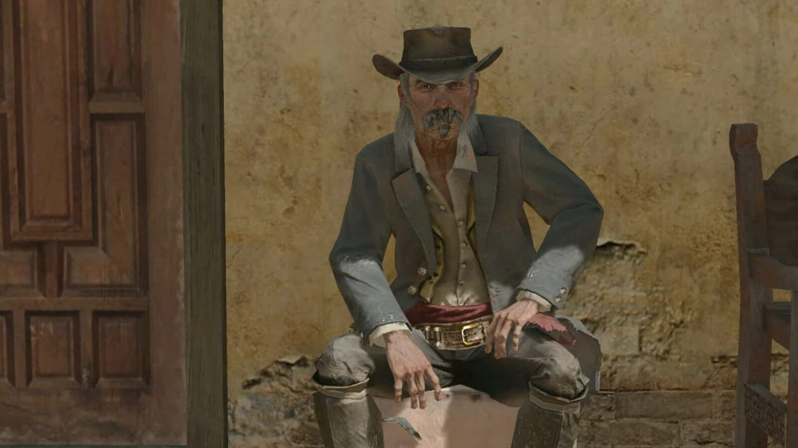
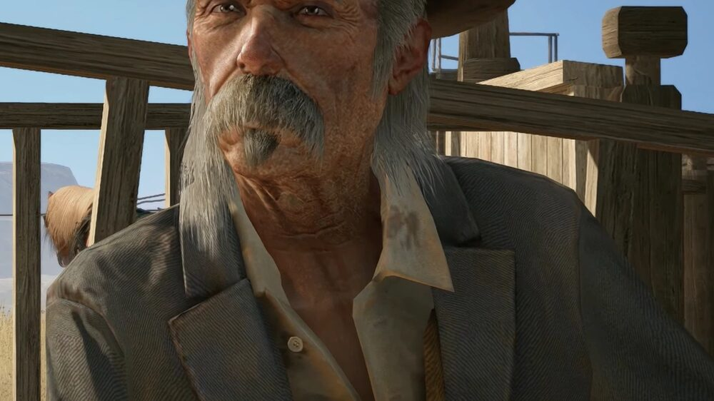
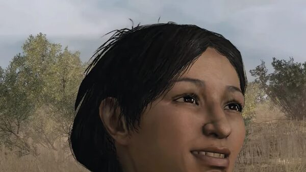
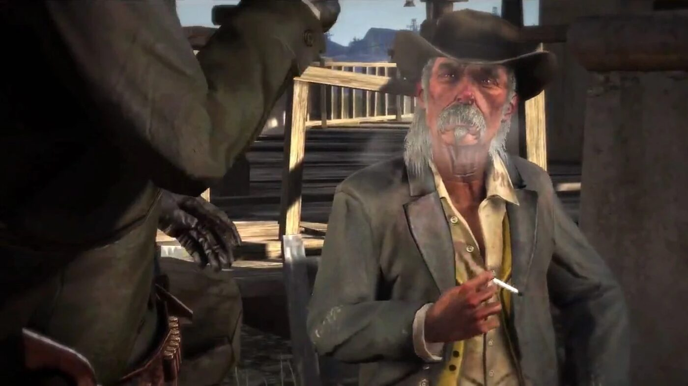

Character · Nuevo Paraíso
Landon Ricketts
Landon Ricketts is an ageing, legendary gunslinger living in the town of Chuparosa, in Nuevo Paraíso, Mexico. Past his prime but still the fastest gun around, he acts as the town's unofficial protector and becomes John Marston's mentor during his time south of the border.
He teaches John the finer points of gunfighting and helps him fight the forces of Colonel Agustín Allende.
- Born
- c. 1861
- Died
- c. 1911 (reported 1914)
- Status
- Deceased
- Nationality
- American
- Games
- Red Dead Redemption
Biography
The mentor in Chuparosa
In "The Gunslinger's Tragedy", Ricketts watches John kill three would-be robbers, then gives him a Schofield Revolver and teaches him the third level of Dead Eye. In "Landon Ricketts Rides Again", the two break Luisa Fortuna out of a government jail under heavy fire.
The wagon train
In "The Mexican Wagon Train", Ricketts and John ambush a prison convoy sent to execute peasants on Allende's orders, driving the wagons to the US border to free the prisoners. The two then say their goodbyes.
Personality
Ricketts is calm, principled and world-weary. He kills only when he must, and carries the manner of a man who has outlived the era that made him famous.
Relationships

John Marston
His pupil in Mexico; Ricketts teaches him gunfighting and rides with him against Allende.

Luisa Fortuna
The young rebel he and John break out of a government jail.
Death and fate
Ricketts survives every mission and parts ways with John. He returns to the United States and, according to an 1914 Blackwater Ledger article, dies quietly in his sleep of old age. He is the only one of John's Red Dead Redemption allies to die within the story's span.
Behind the scenes
Landon Ricketts appears in Red Dead Redemption (2010) and its 2024 remaster. He is voiced by Ross Hagen, in his final role; Hagen died in 2011. The character is modelled on figures like Wyatt Earp and Wild Bill Hickok.
Trivia
- His attire is inspired by Lee Van Cleef's character in the western Day of Anger (1967).
- His famous kills include the Butcher Brothers, in 1896.
- He teaches John the third and final level of the Dead Eye targeting skill.
Gallery
